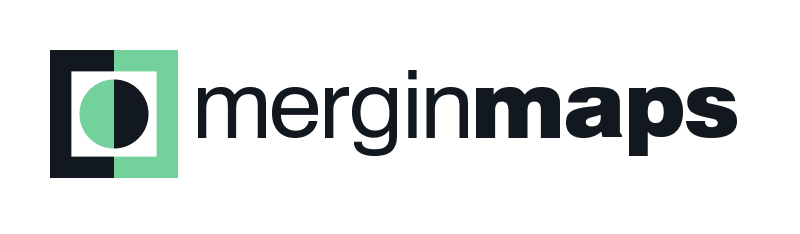
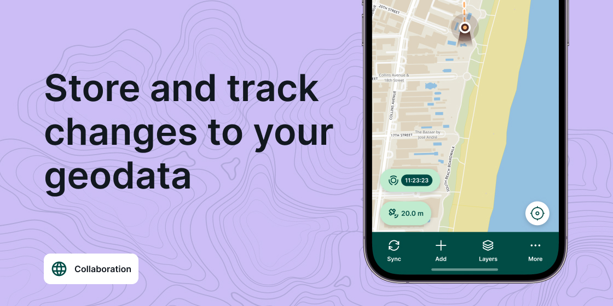

MerginMaps Partnership

MerginMaps partnership
Gis3W fornisce supporto, ad ogni livello, per la soluzione Mergin Maps dedicata alla raccolta dati su campo basata su QGIS.
Con la soluzione OS Mergin Maps puoi:
- predisporre app di acquisizione dati su campo definendo caratteristiche e funzionalita su progetto QGIS
- definire form di registrazione dati sfruttando moduli, widget e strumenti di editing di QGIS
- sincronizzare con facilita i tuoi dati su server centralizzato, con gestione delle incongruenze
- integrare facilmente la propria infrastruttura geospaziale
- collegare un GPS esterno, ad alta precisione, per rilievi di precisione
Integrazione con G3W-SUITE
Sviluppi futuri porteranno ad una integrazione dei progetti QGIS pubblicati su G3W-SUITE con quelli disponibili su Mergin Maps:
- un unico punto di amministrazione per pubblicare su web e su app
- condivisione degli utenti
- semplicita d uso e di gestione
- integrazione tramite API



Gis3W, partner ufficiale di Mergin Maps, fornisce:
- Formazione: preparazione del progetto QGIS, creazione e design dei moduli di inserimento dati, mappe di sfondo, raccolta dei dati sul campo, sincronizzazione e tutto quello che puo servire per i migliori risultati
- Consulenza e supporto: strutturazione del progetto, connessione e sincronizzazione con database centralizzato, soluzioni personalizzate
- Sviluppo: grazie alla collaborazione con gli sviluppatori di MerginMaps, offriamo servizi di personalizzazione, rilasci custom e aggiunta di nuove funzionalita